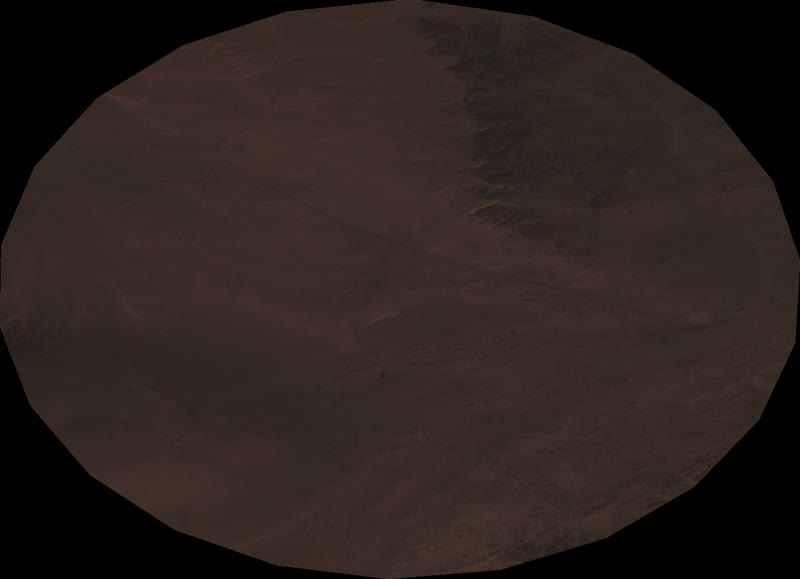
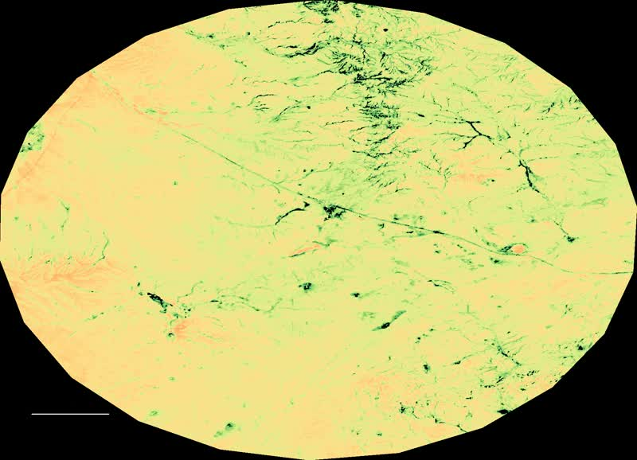
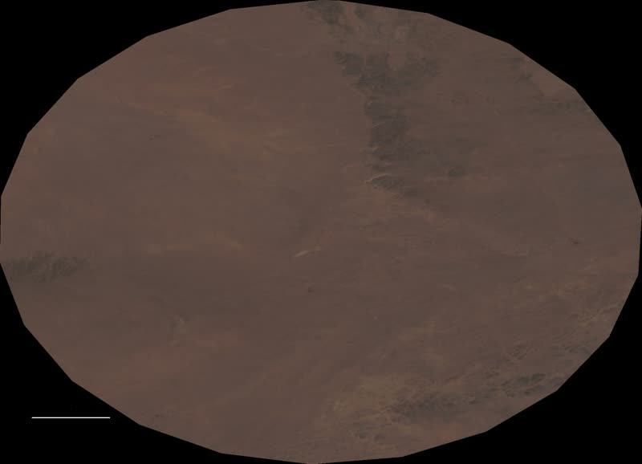
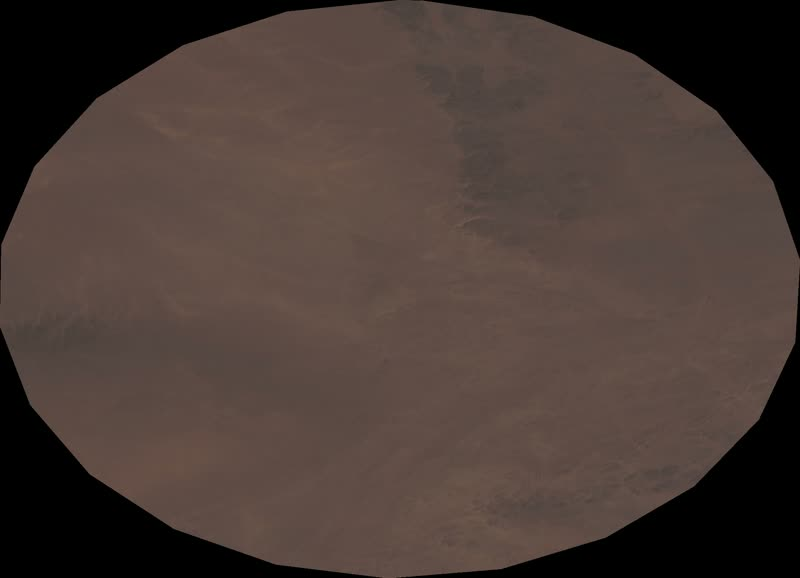

Survey & Design
Comprehensive hydrological and soil assessments, precision layout plans, and organic soil remediation form the rigorous foundation prior to any physical intervention.
The inaugural project spans a 300 by 100-meter corridor where the living canopy forms a satellite-legible message, defining what it means to "be human" through the active stewardship of the earth.
This precise geometry, the central ring combined with the three corner nodes, creates a system of four interconnected circles. This layout symbolizes the four seasons and nomadic grassland management.
The third work, and the 2026–2032 programme. Fifty-four hexagonal cells set out by GPS on a fenced three-hectare site, 4,571 m² of it under planting. Cells run from 12 m² to 400 m², each with a fixed position, an identifier and a named steward. The build order is dependency-driven — water and power, enclosure, buildings, then planting in hardiness order — because on this ground the sequence, not the species list, decides survival.
Tap any cell in the scene above to see its code, size and status — then take a cell of your own on the live map. Cell A-01 is planted by Jack's Coffee: one marked cup, one elm.
Claim a cell Buy now — one coffee, one treeOne Coffee, One Tree. Every specially marked cup sold at COP17 plants one elm in this cell. The buyer names it, and it is irrigated and tended for ten years against a survival count taken twice a year.
Buy now — one coffee, one tree
Comprehensive hydrological and soil assessments, precision layout plans, and organic soil remediation form the rigorous foundation prior to any physical intervention.

The integration of groundwater extraction, irrigation networks, renewable power, soil conditioning, and secure fencing creates the essential life-support system that sustains the entire ecosystem.

Following the precise excavation of planting pits, the saplings are mobilized, biologically inoculated, installed, and immediately integrated into a comprehensive irrigation network.

After the initial planting phase, automated control systems, integrated biosecurity measures, and continuous satellite monitoring ensure the sustained viability of the entire site.
The site’s biomass is formally assessed every five years by independent spatial data analysts—most recently by Martensite Analytica for the 2019–2024 phase using Sentinel-2 and MODIS. Between these milestone assessments, we leverage Google Earth Engine to capture precise, year-over-year ecological data.
2019–2024 assessed by Martensite Analytica (Sentinel-2, MODIS) · 2025–2026 from Google Earth Engine · project site against an adjacent unrestored control. 2026 * is a part year, to August.
| Year | NDVI project | NDVI control | EVI project | EVI control | NDWI project | NDWI control | FAPAR project | FAPAR control |
|---|---|---|---|---|---|---|---|---|
| 2019 | 0.1394 | 0.1307 | 0.1052 | 0.0988 | -0.2748 | -0.2662 | 0.1758 | 0.1649 |
| 2020 | 0.1753 | 0.1417 | 0.1252 | 0.1066 | -0.3013 | -0.2652 | 0.2212 | 0.1787 |
| 2021 | 0.1984 | 0.1357 | 0.1476 | 0.1117 | -0.3108 | -0.2522 | 0.2503 | 0.1712 |
| 2022 | 0.1334 | 0.1129 | 0.1004 | 0.0851 | -0.2778 | -0.2560 | 0.1682 | 0.1424 |
| 2023 | 0.1419 | 0.1017 | 0.1076 | 0.0808 | -0.2829 | -0.2482 | 0.1790 | 0.1284 |
| 2024 | 0.2684 | 0.1941 | 0.1864 | 0.1473 | -0.3629 | -0.3124 | 0.3386 | 0.2448 |
| 2025 | 0.2409 | 0.1674 | 0.1594 | 0.1197 | -0.3568 | -0.2892 | 0.3039 | 0.2112 |
| 2026 | 0.1693 | 0.1262 | 0.1223 | 0.0942 | -0.3062 | -0.2568 | 0.2136 | 0.1592 |

Sentinel-2 · Martensite Analytica, 2019–2024

EVI · Martensite Analytica, 2019–2024

Sentinel-2 Enhanced · Martensite Analytica, 2019–2024

Sentinel-2 Enhanced · Martensite Analytica, 2019–2024
Two tools turn the HEXAGON planting's biological signals into sound.
Every tree generates electrical signals. As leaf stomata open and nutrient-rich sap is drawn upward through the trunk, or when the plant experiences stress from external factors, its cell membrane potential shifts—a measurable change known as bioelectric potential. This piece models those three signals — bioelectric potential, chlorophyll fluorescence and sap flow — from plant-physiology curves for the species planted here, and converts them into sound. It is a physiologically-modelled soundscape, not a live feed: the on-site laboratory that will measure these signals directly is built in 2028.
When leaves drop in winter, fluorescence falls to zero and the music quiets to wind alone. When buds break in spring, the melody returns — the forest's annual cycle, made audible. "Listen to the Forest" free-runs an 11-year cycle (2026–2036) so the soundscape keeps evolving as long as it plays.
Eleven years of change become a four-voice score: canopy sets the melody, crown size the harmony, soil carbon the bass, sand movement the percussion. Rather than reducing desertification reversal to a chart, the score renders it as an audible structure — noise dominates at the start, resolving into harmony by the end.
Restoration on this site is allocated and reported cell by cell. Each of the 54 cells has a fixed position and an identifier, and carries its sponsor's name once taken; survival is counted in full twice a year for every planted cell, so a contribution can be traced to a located area of ground rather than to a site average. Sponsorship confers stewardship and recognition — not title to land.
Partners